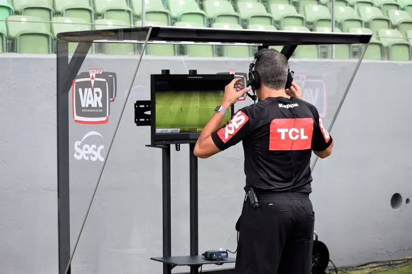

A tecnologia dentro do futebol
A tecnologia passou a fazer parte do futebol para ajudar árbitros, jogadores e treinadores durante as partidas. Atualmente, vários recursos tecnológicos são utilizados para tornar as decisões mais precisas.

Principais tecnologias
- VAR - auxilia o árbitro em lances importantes.
- Linha do gol - identifica se a bola entrou no gol.
- GPS - acompanha os movimentos dos jogadores.
- Câmeras - ajudam na análise das partidas.
- Dados e estatísticas - analisam o desempenho dos atletas.
Como o VAR funciona?
O VAR é um sistema de vídeo utilizado para revisar alguns lances importantes da partida. Árbitros que ficam em uma sala de vídeo analisam as imagens e podem recomendar uma revisão ao árbitro principal.
- O lance acontece durante a partida.
- As imagens são analisadas.
- O árbitro recebe a informação.
- O árbitro pode revisar o lance.
- A decisão final é tomada.
Tecnologias e suas funções
| Tecnologia | Função |
|---|---|
| VAR | Revisar lances importantes |
| Linha do gol | Identificar se a bola entrou no gol |
| GPS | Acompanhar o desempenho dos jogadores |
| Câmeras | Registrar e analisar os lances |
Benefícios da tecnologia
A tecnologia pode ajudar a reduzir erros de arbitragem, melhorar a análise dos jogadores e fornecer informações importantes para as equipes. Ela também permite que os torcedores acompanhem diversos dados durante as partidas.